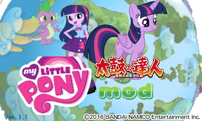
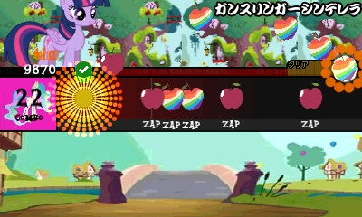
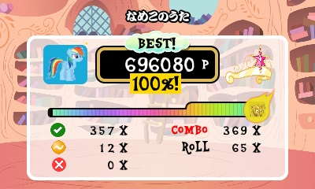
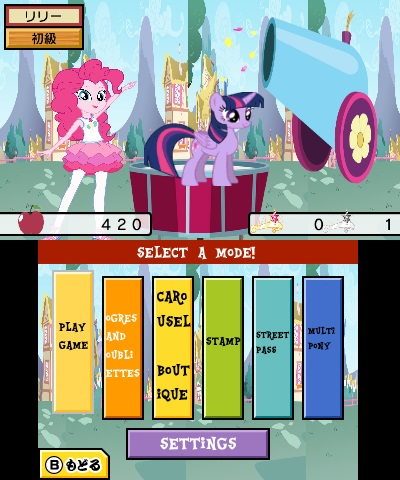

My Little Pony-themed mod for Taiko no Tatsujin: Dokodon! Mystery Adventure
Features
- 45 songs from My Little Pony: Friendship is Magic, My Little Pony: Equestria Girls, and My Little Pony: The Movie (scroll down for a full list!)
- Full difficulty sets for most songs!
- Pony-themed graphics used throughout the game!
- Equestrian font used throughout the game!
- English Language!
- A pony replaces Don-Chan!
Unimplemented (for now!)
- Alicorn Difficulty (Oni) doesn't have a custom gauge graphic, sorry :(
- Only the normal play mode and settings are heavily modified, I was too lazy to change the rest
- Song names haven't been changed yet; you'll have to listen to the preview for now (they're a pain to change)
- Some gameplay graphics, such as dancers, have been removed because they take too much effort to modify
- Star counts are not accurate
- The text under each note is not accurate due to an issue with the converter
- Kusudama graphics aren't changed
Screenshots



Song List
My Little Pony: Friendship is Magic
- A True, True, Friend*
- Apples to the Core
- Art of the Dress
- B.B.B.F.F.
- Babs Seed
- Becoming Popular
- Find the Music in You*
- Flawless
- Generosity
- Glass of Water
- Hearts as Strong as Horses
- Let the Rainbow Remind You
- Love is in Bloom
- Make A Wish
- MLP Theme
- Raise This Barn
- The Magic Inside (NIGHTMARE (Ura) difficulty!)
- The Pony I Want to Be
- The Smile Song (NIGHTMARE (Ura) difficulty!)
- The Spectacle (NIGHTMARE (Ura) difficulty!)
- Winter Wrap Up
- You'll Play Your Part
- You're In My Head Like a Catchy Song
* Not charted for all difficulties
My Little Pony: Equestria Girls
- A Friend For Life
- Awesome As I Wanna Be
- Better Than Ever
- Cafeteria Song
- Friendship Through the Ages
- Legend of Everfree
- Rainbow Rocks
- Run to Break Free
- Shake Your Tail
- Shine Like Rainbows
- Tricks Up My Sleeve
- Under Out Spell
My Little Pony: The Movie
- I'm The Friend You Need
- No Better Feelin'
- Off to See the World
- One Small Thing
- Rainbow
- Time to be Awesome
- We Got This Together
Other
- Days Gone By (It's a Pony Kind of Christmas)
- Equestria Girls Forever (Angelic)
- Jingle Bells (It's a Pony Kind of Christmas)
FAQ
Why does this exist?
Why can't it?
Is this a serious attempt at making a taiko mod?
Yesn't.
Is this an April Fool's Day joke?
First of all, it's April Foal's Day.
Credits
- Flourishing26 from bilibili for having created all of these charts, as well as some graphics pulled from their Taikojiro pony skin
- Team Papafox and Okku Converter for having a publicly accessible song converter